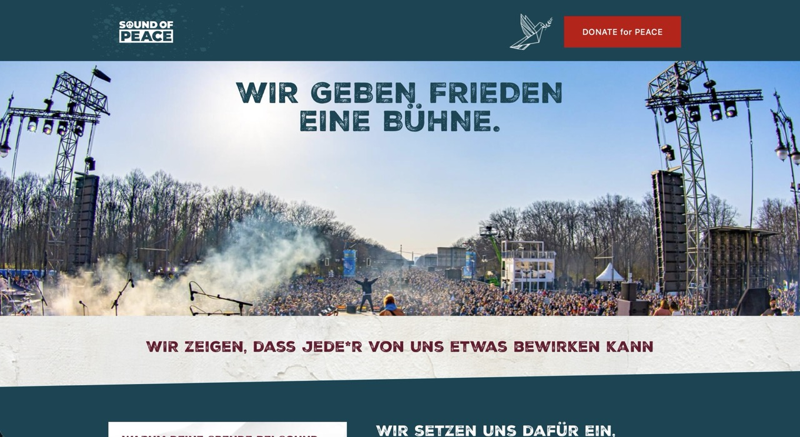
Sound of Peace
Built a WordPress site for a peace-focused fundraising initiative. The experience explains the fund model, highlights impact metrics from past events, and guides visitors to donate with clear, transparent messaging.
HTML • CSS • JS • PHP
I specialise in WordPress engineering: custom themes, clean front-end, and fast, reliable builds. I work daily with Elementor, ACF, Crocoblock, WooCommerce and custom plugins to ship sites that stay flexible and easy to extend.
I’m a hands-on developer with a wide toolkit—from field and content modelling to API integrations, performance fixes, and debugging tricky edge cases—so you get a technical partner who can adapt to almost any WordPress setup.
Selected projects

Built a WordPress site for a peace-focused fundraising initiative. The experience explains the fund model, highlights impact metrics from past events, and guides visitors to donate with clear, transparent messaging.
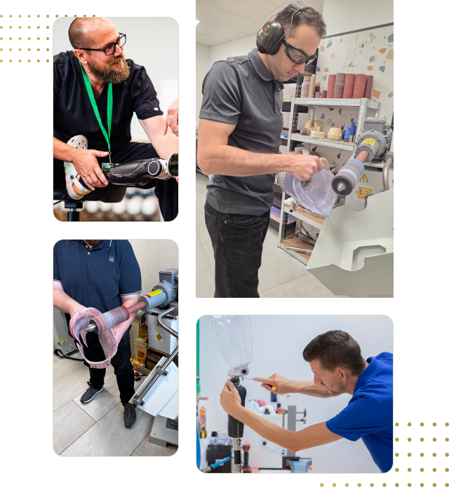
Delivered a modern WordPress build for a prosthetics and orthotics specialist. The site uses JetEngine and Elementor to present their medical products and patient care systems, focusing on a professional and accessible experience for patients seeking expert support.
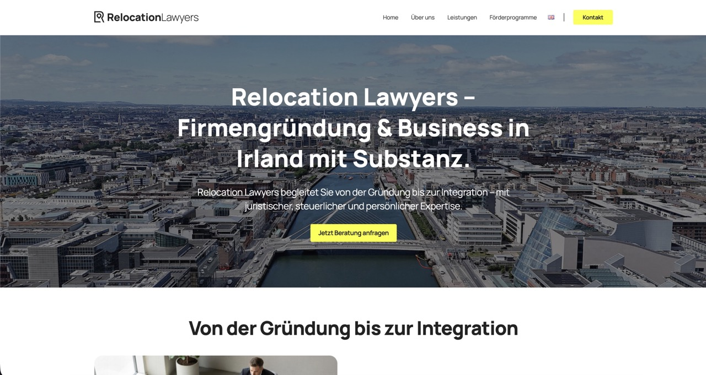
Built a lightweight, fast custom WordPress theme for a law firm helping businesses move to Ireland. The implementation focuses on clear content structure for company formation, tax, and relocation support, while staying easy to extend and maintain.
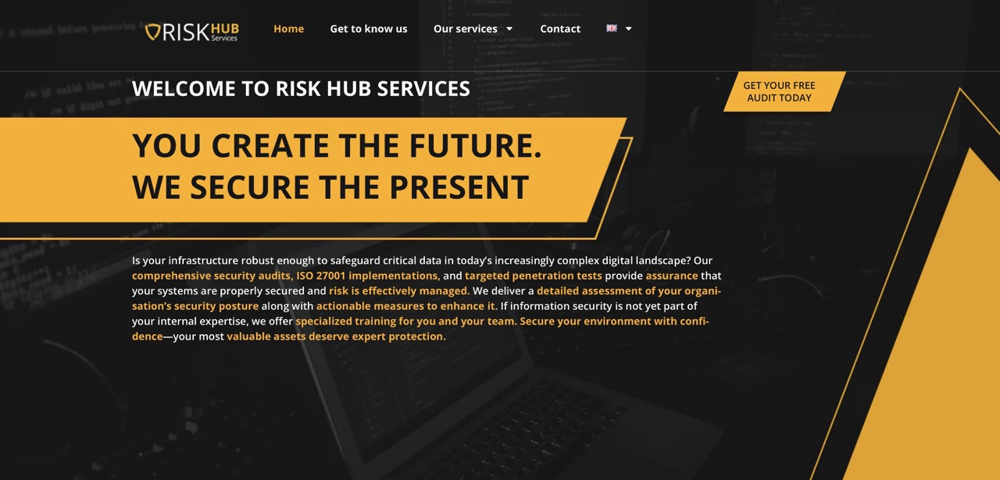
Implemented a multi-step audit system in WordPress for assessing cybersecurity posture. Custom logic guides visitors through detailed, form-based questions, generates tailored results, and sends completed audits to clients with a clear invitation to continue the conversation.
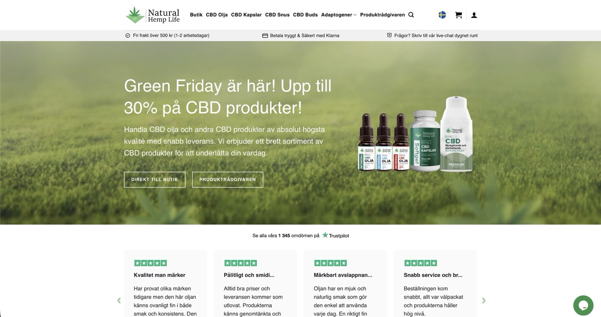
Extended a WooCommerce shop with product subscriptions, including custom back-end tooling. The WordPress admin view surfaces subscription orders, key stats, and lets staff manually cancel or adjust subscriptions.
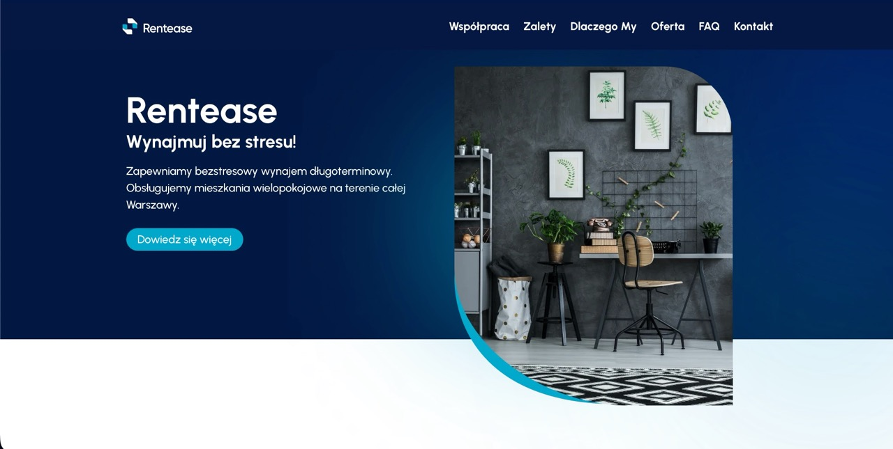
Built a clear, conversion-focused WordPress implementation for a Warsaw-based long-term rental service. Custom sections explain the offer for landlords and tenants, emphasising stress-free rental management and multi-room apartments across the city.
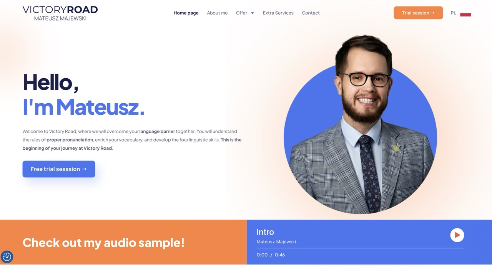
Delivered a WordPress build for a premium English language project focused on professional, confident communication. The code supports sections for general, business, and exam courses plus CV and interview services.
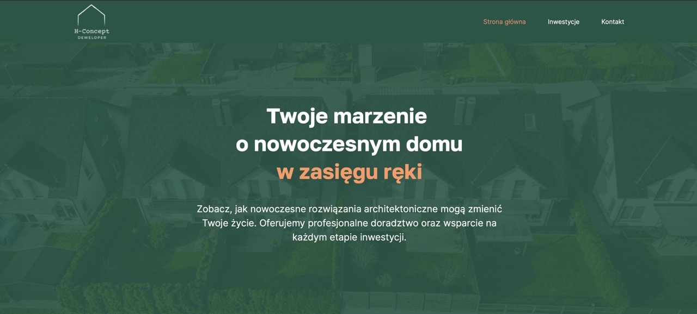
Implemented an interactive WordPress + Elementor setup for managing investments and apartments directly from the admin panel. The custom logic lets the client add, filter, and present units in a dynamic, easy-to-update way.
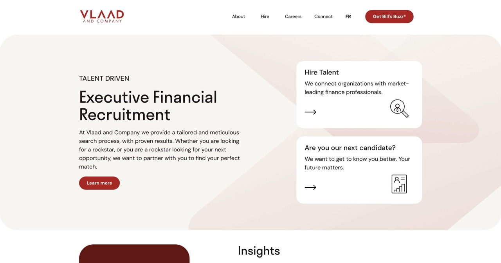
Built a WordPress site for a finance-sector recruitment firm, positioning their executive search expertise and tailored matchmaking approach. The structure highlights services, insights, and current opportunities for both clients and candidates.
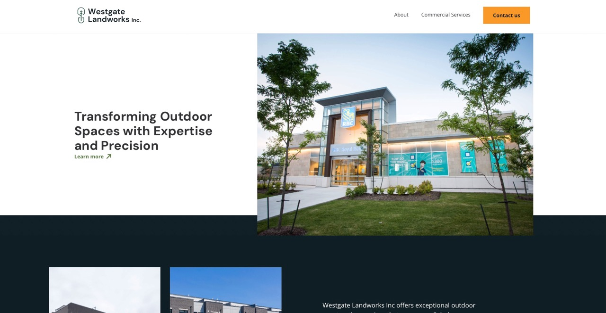
Implemented a custom WordPress build for Westgate Landworks on top of Elementor. The theme and templates showcase their landscaping portfolio, services, and contact flows in a way that is fast and easy to maintain.
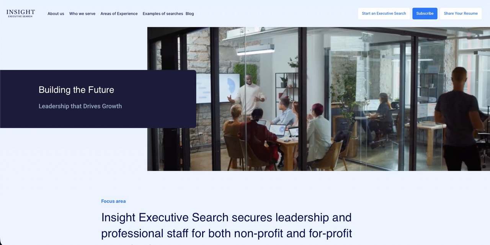
Developed the WordPress implementation for an executive search firm focused on senior talent. The build translates the design into performant templates highlighting services, sectors, and insights for both clients and high‑calibre candidates.
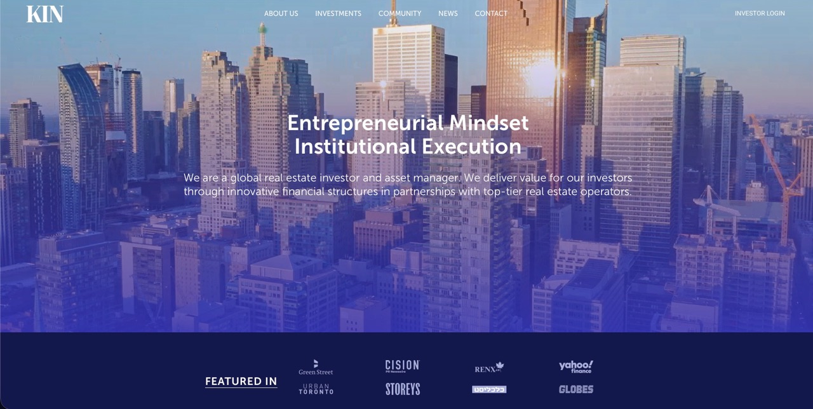
Engineered a WordPress theme for a financial firm, focused on performance and code clarity. The implementation supports content blocks that communicate mission, strategy, and team expertise to partners and clients.
Capabilities
Clean, component-based themes and front-end that stay easy to extend.
Feature work done in code—plugins, fields, and integrations instead of fragile hacks.
Keeping WordPress installs fast, secure, and predictable over time.
Availability
Whether you're updating an existing site or starting from scratch, I deliver solid WordPress builds and stay available for ongoing improvements.
Drop a note